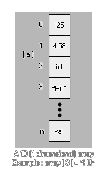

数组在一开始看来可能不容易理解，但是它们在游戏制作的过程中是非常有用的也是不可或缺的一部分。为什么？有些东西不用数组实现不了——
- 菜单。如果有一两个数组的话，创造一个良好的菜单系统就不是什么难事了。
- RPGs。制作 RPG 游戏时数组是基础的用法，仅需数行数组就可以替代使用混乱的变量，并且随时可以重新提及。
- 纸牌游戏适合跟踪卡牌和手牌，甚至可以洗牌！
- 高分和其他统计信息跟踪一个数组比多个变量容易得多。
这些只是冰山一角，数组是你可以使用的最基础的编程工具之一，他们能应用的地方会让你惊讶。你可以在 GML 中使用不同类型的数组，下面的部分概述了这些数组：
好了，我们可以用数组做到上面提到的那些事情，那么数组究竟是啥呢？它长啥样呢？emmm……就像这样…… 
array[0] = 1.25;
这是一个一维数组。看起来没什么特别的吧？下面我们把它分解开来看：
array
这是数组名和其他所有变量都一样，它可以是你所想的任何东西，比如 "a" 或者 "mymumscow"。
[0]
这是我们正在检查或更改的数组中的位置。你看，一个数组基本上是一个容器，里面有一些存储值的空格，容器中的每个位置都有一个特定的数字编号来标识它，也就是我们放在 [] 中的内容。需要注意的是数组编号 开始于 0 并且 永远不能为负数。现在我们给数组扩展三个位置。
array[2] = 0;
array[1] = 0;
array[0] = 0;现在我们的数组包含三个位置（0、1 和 2），并且我们初始化数组为 0。为什么这样做呢？好吧，在我们使用它之前必须先将数组 初始化，否则 GameMaker Studio 2 将给出一个错误。初始化数组的意思就是给数组中每一个位置的数据赋予一个初始值，以便我们之后的物体或者代码块中使用。这一点很重要，因为这意味着在使用数组之前必须进行一定程度的规划，但是使用像这样的 “repeat” 循环来初始化它很容易......
var i = 9;
repeat(10)
{
array[i] = 0;
i -= 1;
}这个简单的代码将初始化十个位置的数组（0 - 9）为 0，数组的每个位置储存的数值都是 0。你将会注意这个数组是 倒序 初始化的，最后一个位置是首先定义的。不是严格必要，但却是最好的方式，因为这样会精确地在内存中保留一个数组空间，而如果你从零向后初始化，内存将在每一次添加值时重新分配。对于较小的数组，速度差异可以忽略不计，然而较大的数组应该尽可能地以这种方式优化。
但如果我们想给不同的位置赋予不同的值该怎么做？好吧，我们必须自己手动输入每个位置，但是也有一个很好的技巧可以帮助我们跟踪那里的东西！
count = 3; // 先用变量定义数组的最大位置
array[count] = "you?"; // 用变量作为数组的下标位置，给数组赋值
count -= 1; // 位置减1
array[count] = "are "; // 再赋值
count -= 1; // 再减1
array[count] = "How "
count -= 1;
array[count] = "Hello!"
count -= 1;正如你所看到的, 我们没有在实际数组中使用任何数字, 而是使用一个变量来倒计数。这样做有两个好处。一来可以避免打错数字，二来可以使用 count 这个变量计算数组包含数据的个数，这个变量可以用到物体的其它地方。非常有用，是吧！
最后，你可以使用单个变量调用将值分配给数组，如下所示：:
var a = [0, 1, 2, 3, 4];
var b = [];上面将创建两个数组作为局部变量， 第一个已填充了 5 个元素，第二个作为空数组，准备用来添加值。
然后，我们怎么实际应用呢？确切的说，和普通的变量没有区别， 请看下面的例子：
total = array[0] + array[5]; // 两个数组中的值相加
if (array[9]) == 10 // 检测数组的值
{
// 做些什么
}
draw_text(32, 32, array[3]); // 绘制数组的值另外因为数组的数据是连续的，所以我们可以使用循环来调用数组，就如同数组的初始化：
var total = 0;
for (var i = 0; i < 10; i++;)
{
total += array[i];
draw_text(32, 32 + (i * 32), array[i]);
}
draw_text(32, 32 + (i * 32), total);这段程序将数组中的数据依次累加，并绘制数组的值每个值，最后绘制累加的总和。
现在我们知道了普通的数组，再看看二维（2D）数组。
array[0, 0] = 5;
之前每个数值对应数组的一个位置，但这次一个位置有 “a” 和 “b” 两个坐标。想象它是容器的另外一个维度，一个高度 和 一个宽度，而一维数组只有高度。下面有一些例子：
array[1, 2] = 1;
array[1, 1] = "hello";
array[1, 0] = 55.5;
array[0, 2] = sprite_index;
array[0, 1] = "world";
array[0, 0] = -67.89;二维数组在使用前同样也需要初始化，和其它的变量一样，也可以存储实数、字符串和常量。在需要便捷地储存大量数据时，二维数组是一个理想的选择（记住，数组中循环非常方便）。实际游戏中怎么用呢，请看下面的你还子：假如你想在随机的位置产生四个不同的怪物。那么，我们可以像这样使用二维数组，相比其它的方式，节省了很多代码。
首先，我们应该初始化这个我们将在 “controller” 物体的创建事件中使用的数组（注意使用注释来提醒每个数组项的作用）：
enemy[3, 2] = 448; //y 位置
enemy[3, 1] = 32; //x 位置
enemy[3, 0] = obj_Slime; //物体
enemy[2, 2] = 448;
enemy[2, 1] = 608;
enemy[2, 0] = obj_Skeleton;
enemy[1, 2] = 32;
enemy[1, 1] = 608;
enemy[1, 0] = obj_Knight;
enemy[0, 2] = 32;
enemy[0, 1] = 32;
enemy[0, 0] = obj_Ogre;现在我们在数组储存的坐标对应的位置产生物体的实例。下面的代码可以在控制器的另外一个事件中使用（比如计时器，或者按键事件）。
var i;
i = irandom(3); //获取 0 到 3 之间的随机数，包括 0 和 3
instance_create_layer(enemy[i, 1], enemy[i, 2], enemy[i, 0], "Enemy_Layer"); //使用数组创建物体上面简短的代码将在游戏房间内产生随机的敌人，这比 “if / then / else” 结构甚至 “switch” 结构使用的代码更少。并且由于是统一写在创建事件中，编辑修改起来也更方便。同样值得注意的是，每一个二维数组的长度可以是不同的，所以你可以有一个长度是 2，但入口为 0、长度是 4，入口为 1、长度是 3，并且入口为 2 的数组：
array[0, 0] = 1;
array[0, 1] = 2;
array[1, 0] = "one";
array[1, 1] = "two";
array[1, 2] = "three";
array[1, 3] = "four";
array[2, 0] = "1";
array[2, 1] = "2";
array[2, 2] = "3";
就像普通的变量，你也可以传递数组到脚本中，并返回到调用这个脚本的实例中。做到这点，仅需指定指定变量数组（不需要每个入口独立传入）并作为脚本的一个参数。尽管如此，不管你是否更改了数组的值，这个数组都会复制一个临时的数组，以供这个脚本使用。注意这个词 临时 ！你不是传递这个数组自身（数组变量），代替的是要求脚本创建这个数组的拷贝（副本），脚本中可以随意更改。这也意味着，如果你想更改数组里的任何值，你 必须在脚本中返回这个数组 。
注意： 出于这个内在机制，向脚本传递数组将影响运行效率，尤其是数组非常大时。所以请谨慎使用此功能 ！例如，考虑下面的代码。首先创建将要使用的数组，然后传递给脚本：
for (var i = 9; i > -1; i--;)
{
a[i] = i;
}
scr_Return_Array(a);脚本内容：
for (var i = 9; i > -1; i--;)
{
a[i] = i * 100;
}现在你期望最后的数组保存的值是 900、 800、 700 等等……但并不是这种情况，既然我们 没有 从脚本中返回数组，所有改变都只是数组作为参数传递给脚本时创建的临时副本，而不是参数中的数组。为纠正这一点，重写代码如下：
for (var i = 9; i > -1; i--;)
{
a[i] = i;
}
a = scr_Return_Array(a);脚本这样写：
for (var i = 9; i > -1; i--;)
{
argument0[i] = i * 100;
}
return argument0;注意： 如果不更改数组的值， 没有 必要那写，仅需要引用即可。引用一个数组更快，它不是会复制。删除一个数组仅需要对定义它的变量重新赋予一个值。这会释放数组所有数据关联的内存。比如：
for (var i = 9; i > -1; i--;) // 创建数组
{
a[i] = i;
}
a = 0; //删除数组值得注意的是，你可以使用访问器 @ 在脚本中引用并直接更改数组的值，这样可以节省将数组复制到脚本中的 CPU 开销。关于它的用法，访问器这一节可以找到更多的信息和数组的例子，详情访下面的页面：

数组函数
下面有一些数组相关的函数。允许你在代码设计中更为灵活，在制作游戏中更好的创建功能强大的动态数组。这些函数是：